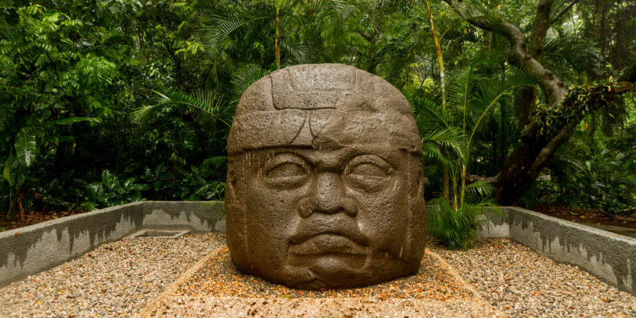
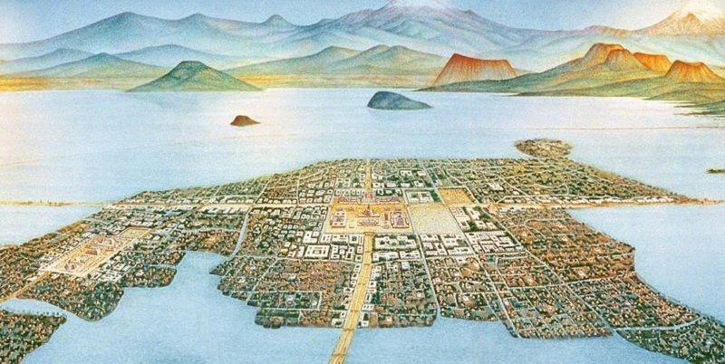

Culturas Mesoamericanas
Entre las civilizaciones que se establecieron en la época prehispánica en la mencionada región sobresalen la Maya, Olmeca, Totonaca, Zapoteca, Mexica o Azteca, Huasteca y Tolteca; pero existen cientos de culturas locales más que sería largo enumerar , detalló al referir que temporalmente abarca desde por los menos el 1900 a.C. al 1521 d.C.
Cultura Maya
La cultura o civilización maya fue la desarrollada por uno de los más destacados pueblos mesoamericanos precolombinos, cuyos inicios se rastrean desde la Época Preclásica (2000 a.C. – 250 d. C.) del continente y sus últimos vestigios hasta la Época Posclásica (900-1527 d. C.), cuando se produjo la Conquista de América.
Los mayas se desarrollaron en diversos aspectos, logrando el único sistema de escritura completo de toda la América precolombina, y dejando un legado importante en materia artística, arquitectónica, matemática, astronómica y ecológica.
Durante su apogeo, los mayas fueron la cultura dominante en la región, abarcando casi en su totalidad el territorio mesoamericano y manteniendo relaciones muy dinámicas con las otras culturas locales, como los olmecas o los mixtecos. A continuación, y a modo de resumen, explicamos las características más destacadas de la civilización de los mayas.
Los pueblos mayas surgieron en el continente mesoamericano, considerado una de las seis cunas de la humanidad, y llegaron a expandirse a lo largo de un territorio que abarca, hoy en día, el sureste de México y el norte de Centroamérica: la totalidad de la península de Yucatán, la totalidad de Guatemala y Belice, así como el occidente de Honduras y El Salvador.

Cultura Olmeca
Se piensa que la cultura olmeca fue la “madre” de las culturas mesoamericanas que se originaron en el territorio del actual México.
Los olmecas habitaron la zona sur y centro de dicho territorio desde el Período Formativo (2000 años antes de Cristo) hasta el Período Clásico (400 años antes de Cristo).
Se les considera los inauguradores de todo un estilo artístico y arquitectónico del cual hay aún abundantes ruinas, y cuyos motivos fueron adoptados por las culturas subsiguientes de la región. Esto significa que mucho de la cultura olmeca permaneció viva incluso después de su decadencia.
El término “olmeca”, al mismo tiempo, sirve para designar el estilo artístico propio de esta civilización y copiado por otras posteriores, cuyas evidencias pueden hallarse desde Jalisco hasta Costa Rica.
Los olmecas se establecieron en la región sureste de los estados mexicanos de Veracruz y Tabasco, pero su influencia puede rastrearse a lo largo y ancho de Mesoamérica.
Hay evidencia de su origen en Chiapas o en los Valles Centrales de Oaxaca, así como el Istmo de Tehuantepec. Sus principales centros ceremoniales fueron San Lorenzo (1150 a.C.), La Venta (1750 a.C.) y Tres Zapotes (900 a.C.).
Sin embargo, es posible hallar vestigios de cultura olmeca en la actual Guatemala, Belice, El Salvador, Nicaragua y Honduras.

Cultura Azteca
El origen del pueblo azteca es algo incierto, pero los vestigios de su tradición sugieren que fueron cazadores y recolectores en la meseta del norte de México antes de que llegarán a la región de Mesoamérica, alrededor del siglo XII d. C.
El término “azteca”, proveniente de la lengua náhuatl, significaba “gente que vino de Aztlán”. El pueblo azteca abandonó Aztlán y se mantuvo vagando durante varios años antes de establecerse de manera permanente en el territorio de la actual Ciudad de México y alrededores.
Se establecieron en islas sobre el lago Texcoco y a partir del 1325 d. C. fundaron la ciudad de Tenochtitlán, que se convirtió en su principal centro. Formaron alianzas con los estados vecinos de Texcoco y Tlacopan hasta convertirse en el poder dominante en el centro de México.El dominio azteca se basó en el desempeño militar y la guerra que permitió el avance de la cultura hasta convertirse en un imperio. El pueblo era administrado por las clases sacerdotales y burocráticas de la sociedad.
La formación del imperio azteca surgió luego de la alianza entre tres grandes ciudades: Texcoco, Tlacopan y Tenochtitlán. A través de la centralización militar, los aztecas lograron la convivencia de las tres culturas que tenían algunas diferencias entre sí.
La colosal Piedra del Sol La civilización azteca se caracterizó por:
La arquitectura. Los aztecas apreciaban las bellas artes, desde objetos preciosos grabados en miniatura hasta enormes templos de piedra. Se destacaron el sofisticado desarrollo en la arquitectura y las esculturas monumentales, como la estatua colosal Coatlicue (su nombre significa “falda de serpientes”) y la escultura de Xochipilli sentado (el dios del amor y de la belleza).
Emplearon el arte como manera de significar y difundir el poder imperial de Tenochtitlan, en obras como la Piedra del Sol, la piedra de Tízoc y el trono de Motecuhzoma II, que retrataban ideologías políticas aztecas vinculadas con los eventos cósmicos y con los dioses. Se destacaron por la construcción de templos, como la pirámide del Templo Mayor.
La religión. Los aztecas, como la mayoría de las culturas precolombinas, practicaron un lazo en común entre la mitología y la religión. La ciudad de Tenochtitlan funcionaba como centro mítico y, según las creencias aztecas, el dios Huitzilopochtli les había mostrado el camino para construir el centro ceremonial en esa ciudad, a través de un águila que se había posado sobre un cactus. El dios, además, los había bautizado como “los mexicas” y, junto con otros grupos étnicos que también hablaban la lengua náhuatl, formaron el gran pueblo conocido como los aztecas.
Los aztecas adoraban a múltiples dioses, aunque los principales fueron Huitzilopochtli (el dios de la guerra y el sol) y Tláloc (el dios de la lluvia).
La astronomía. Los aztecas se destacaron por sus conocimientos en astronomía. Consideraban que el mundo había pasado por una serie de eras cósmicas en las que cada una contaba con su propio sol. La era correspondiente a los aztecas era la quinta y fue representada con la colosal Piedra del Sol que simbolizaba la concepción del tiempo, pero no como un calendario. Es una de las piezas más representativas del conocimiento en astronomía alcanzado por los aztecas. Además, habían identificado diversas constelaciones, como las Pléyades y la Osa Mayor, que las tomaban como referencia para diagramar sus ciclos temporales. Reconocían dos grupos de astros: el grupo del norte llamado Centzon Mimixcoa(que significaba “cuatrocientas serpientes de nubes”) y el grupo del sur llamado Centzon Huitznáhua (que significaba “cuatrocientos meridionales”).

Para continuar aprendiendo mas has clik.